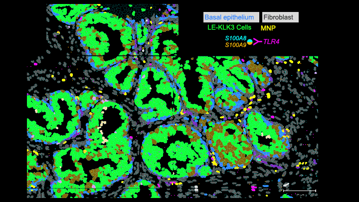
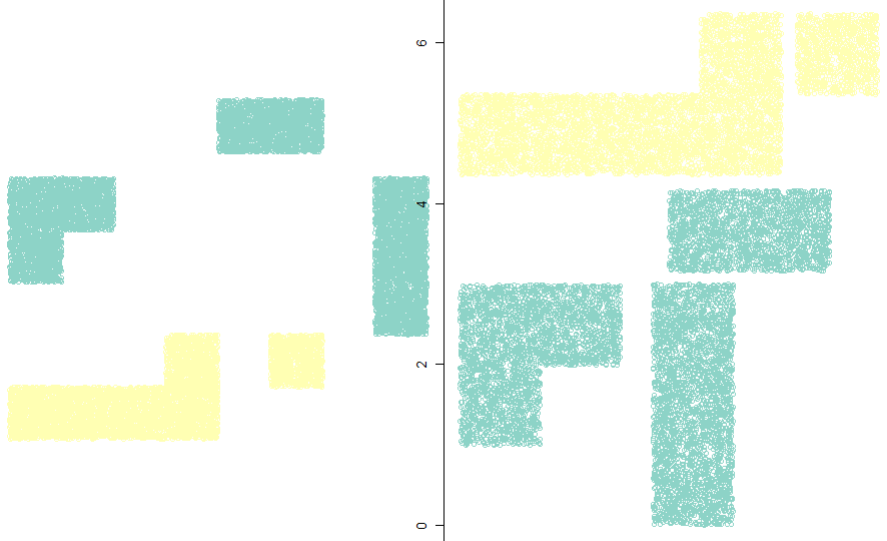
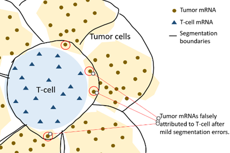
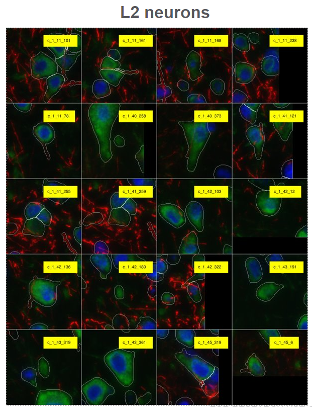
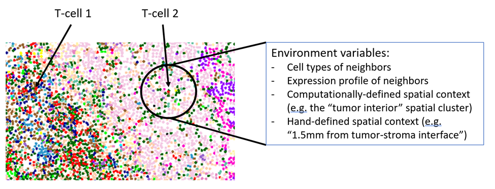
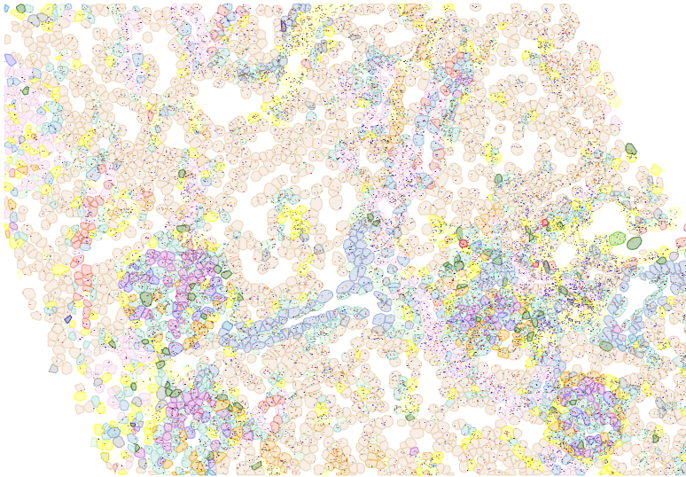

Blog
License
Code
Browse Posts by Topic
CosMx Analysis Scratch Space
Categories
All
(12)
Seurat
(1)
algorithms
(1)
big data
(1)
cell typing
(2)
napari
(2)
normalization
(1)
overview
(1)
pre-processing
(1)
quality control
(1)
segmentation
(1)
visualization
(5)
Introduction to visualizing CosMx data in Seurat
visualization
Seurat
Recommendations for spatial plots in Seurat
May 10, 2024
Claire Williams

Getting Started with the
napari-cosmx
plugin
visualization
napari
The AtoMx™ Spatial Informatics Portal (SIP) is an excellent solution for analyzing multi-omics spatial data generated on the CosMx™ Spatial Molecular Imager (SMI). It offers…
May 1, 2024
Evelyn Metzger
The spatial algorithms zoo: recommended algorithms and efficient code
algorithms
Spatial statistics is a well-developed field, with deep statistical methodology and highly efficient open-source tools. In CosMx data, where a single study can contain…
Mar 20, 2024
Patrick Danaher
On the use of marker genes
cell typing
Our basic recommendation is this: relying on a few marker genes alone will not produce successful cell typing.
Mar 12, 2024
Patrick Danaher
Cell typing: what we’ve found to work
cell typing
We cell type most studies using one of the following approaches:
Mar 12, 2024
Patrick Danaher
Big datasets: strategies for memory-efficient analysis
big data
CosMx data can be truly huge, containing millions of cells and thousands of genes. This prevents many typical analysis strategies, including many toolkits designed for…
Mar 4, 2024
Patrick Danaher
QC and normalization of RNA data
quality control
normalization
pre-processing
We’ve tried a lot of options here, and we’ve settled on very simple procedures for most cases.
Jan 29, 2024
Patrick Danaher

Functions for condensing FOVs and tissues to minimize whitespace
visualization
Minimizing whitespace while plotting cells in xy space is a constant challenge. A single tissue will often have discontinuous FOVs, and aligning multiple tissues in a…
Jan 26, 2024
Patrick Danaher

The impact of segmentation error on differential expression analyses
segmentation
Cell segmentation is always imperfect, leaving some cells’ expression profiles contaminated with transcripts properly belonging to other cells. For many analyses, this is a…
Jan 24, 2024
Patrick Danaher

Visualize cellular neighborhood in gallery mode
visualization
napari
A complete CosMx dataset will contain cell metadata, morphology/protein images and cell label results of cell segmentation. We’ve created a toolkit for visualizing the…
Jan 24, 2024
Lidan Wu, Patrick Danaher

What is high-plex spatial transcriptomics for?
overview
High-plex single cell spatial transcriptomics data is a little awe-inspiring: even a perfunctory analysis of a single run produces a terabyte of data, gorgeous images, and…
Jan 5, 2024
Patrick Danaher

Inferring cell polygons from transcript locations
visualization
A complete CosMx dataset will contain polygonal boundaries for each cell for use in plotting. In practice, especially with earlier datasets or with datasets passed between…
Jan 5, 2024
Patrick Danaher
No matching items